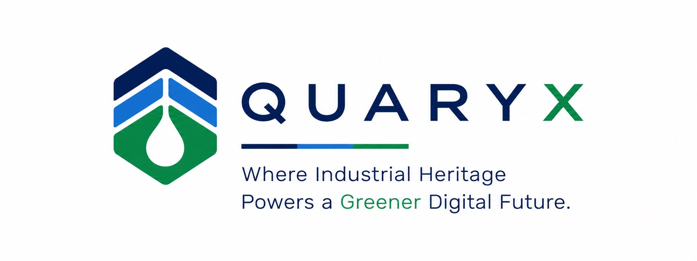
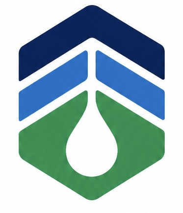

Energy potential
A platform suited to tomorrow’s infrastructure

Strategic redevelopment of an industrial site
A platform suited to tomorrow’s infrastructure
IN A BORDER REGION
FOR TOMORROW
Conceptual illustration
01 / The Project
Transforming an industrial site in Wallonia into a platform for next-generation Data & AI infrastructure.
Industrial land available and secured
Existing buildings with redevelopment potential for digital infrastructure.
Available and secured land to support the project’s phased development.
Access to electricity networks and opportunities for renewable integration, subject to technical validation.
Water resources with cooling potential, to be assessed through technical and permitting studies.
02 / Data & AI
An initial phase designed with the operator, with scope for expansion.
Including IT equipment, cooling and ancillary systems.
Coverage and operating assumptions to be refined.
Subject to technical studies.
Grid connection, local generation, storage and backup solutions to be defined jointly.
Closed-loop cooling, designed around the operator’s requirements.
Define the initial phase with the operator.
Size infrastructure around the 2 MW starting point.
Grow in line with demand and secured capacity.
PUE (Power Usage Effectiveness): total data center energy consumption divided by IT equipment energy consumption. Heat recovery is measured separately.
03 / Energy
Four complementary energy options, coordinated around the site’s needs.
Rooftops and suitable areas offer solar potential.
Potential direct supply under a power purchase agreement.
On-site and nearby battery projects; availability to be confirmed.
Nearby high-voltage infrastructure; capacity to be validated.
04 / Water & Heat
Exploring water-based cooling and local reuse of recovered heat.
Closed-loop cooling
A water-based cooling approach designed around the operator’s requirements.
Local heat reuse
Potential supply to nearby buildings, industry or greenhouses.
Industrial redevelopment
Explore shared water and heat infrastructure within the industrial environment.
05 / Strategic land
A phased approach to industrial redevelopment, shaped around the operator’s needs.
Existing building
An existing industrial building to accommodate an initial phase.
Tier III or Tier IV design to be defined.
Land available in stages
Land available in phases, with one third ready for immediate development.
Plan the next stage around operational needs.
Longer-term potential
A wider industrial site spanning several hectares.
Explore spatial redundancy and future capacity.
Conceptual illustrations

06 / Contact
Looking for a site for your next Data & AI project? Get in touch to discuss your requirements and explore a potential partnership.
Share your capacity needs, operating requirements and development objectives.
Detailed site information and data room access are shared by invitation, following execution of a mutual non-disclosure agreement.